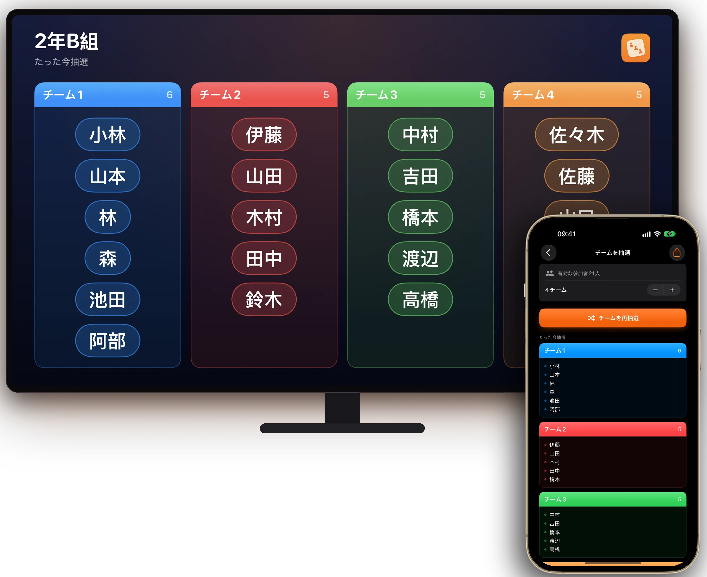
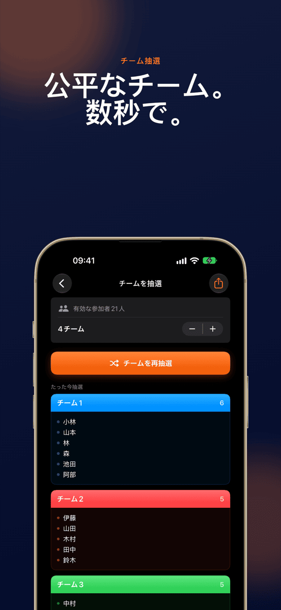
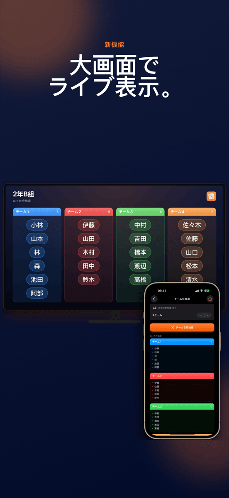
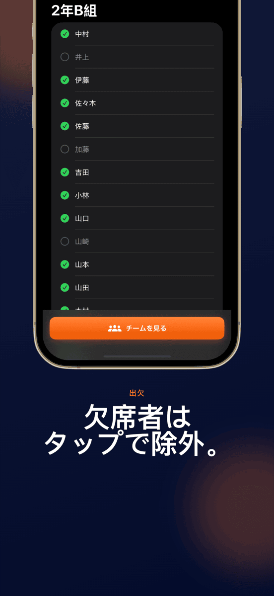
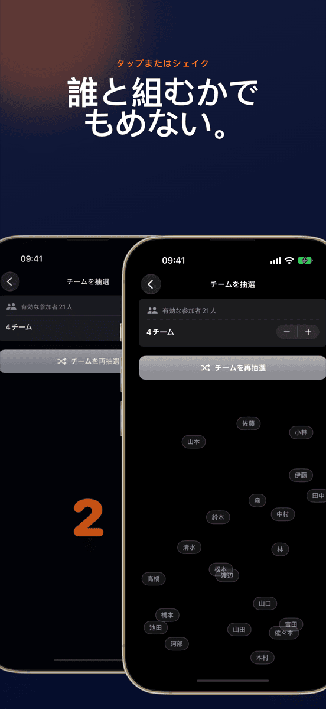
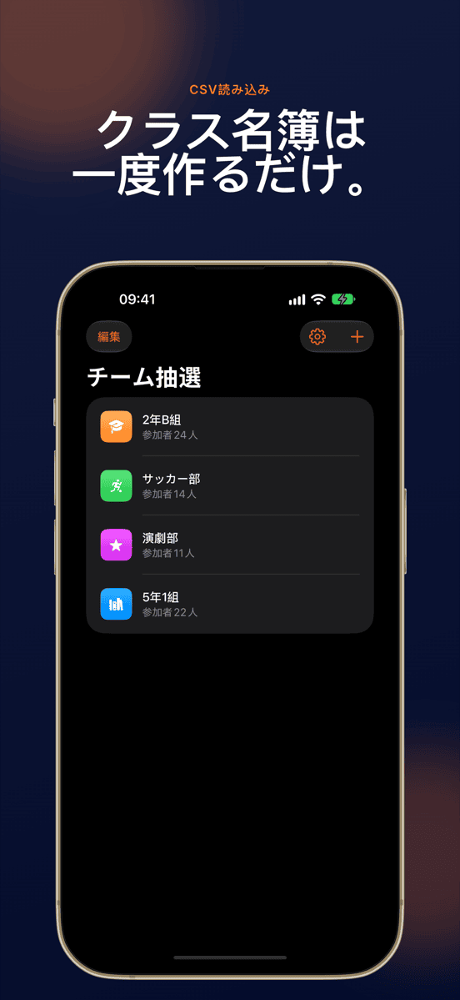
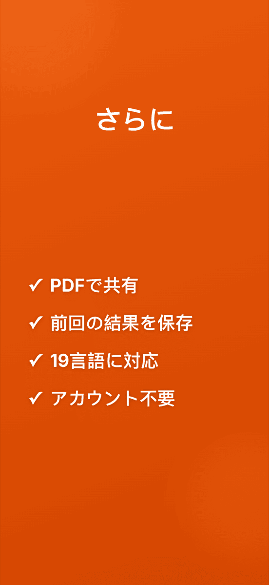

新機能大画面でライブ表示
チーム抽選
公平なチーム。数秒で。







もめないチーム分け。
大画面でライブ表示
AirPlayまたはケーブルで、チームが決まる様子をクラス全員で見られます。
タップひとつで完了
全員がランダムに、均等な人数でチームに分かれます。
グループは保存される
クラスやチーム、クラブは一度作れば何度でも抽選できます。各グループの前回の抽選結果も残ります。
欠席者は除外
欠席者はタップひとつでチェックを外せば、抽選から外れます。
チーム数は自由
2人組、3人組、4人組、もっと大きなチームも。
目の前でシャッフル
アニメーションで全員の名前が見えるように混ざります。端末を振れば次のラウンド。
使い方はかんたん。
グループを作る
名前を入力するか、CSVを読み込みます。
欠席者を外す
今日いない人をタップで外します。
抽選する
チーム数を選んでタップし、見守ります。
見せる
プロジェクタに映すか、PDFで共有。
ガイド
よくある質問
グループをランダムにチーム分けするには？
チーム抽選でグループを一度作り、メンバーを追加して抽選を始めます。選んだチーム数に、全員がランダムかつ均等に振り分けられます。
チーム抽選はどんな人向け？
チーム分けをよく行うすべての人に。先生、コーチ、ワークショップの進行役、クラブ、イベントの主催者など。
チーム数は自分で決められますか？
はい。2人組から大きなチームまで、チーム数を自分で選べます。チーム抽選がメンバーを均等に振り分けます。
データは保存・送信されますか？
グループと名前はすべて端末内にだけ保存されます。サーバーに送信されるデータはありません。
Excelから名前リストを読み込めますか？
はい。ExcelやGoogleスプレッドシートからCSVで書き出し、チーム抽選に読み込むだけ。クラス全員が数秒で登録できます。
抽選をプロジェクタに映せますか？
はい。iPhoneやiPadをAirPlayまたはケーブルでプロジェクタ、Apple TV、モニタにつなぐと、チーム抽選が抽選を横向きでライブ表示します。操作はそのまま手元の端末で行えます。
チーム抽選の料金は？
ダウンロードと最初の抽選は無料です。2回目以降の抽選には月額または年額のProサブスクリプションが必要で、まず無料で試せます。チーム抽選はiOS 17以降のiPhoneとiPadで使えます。